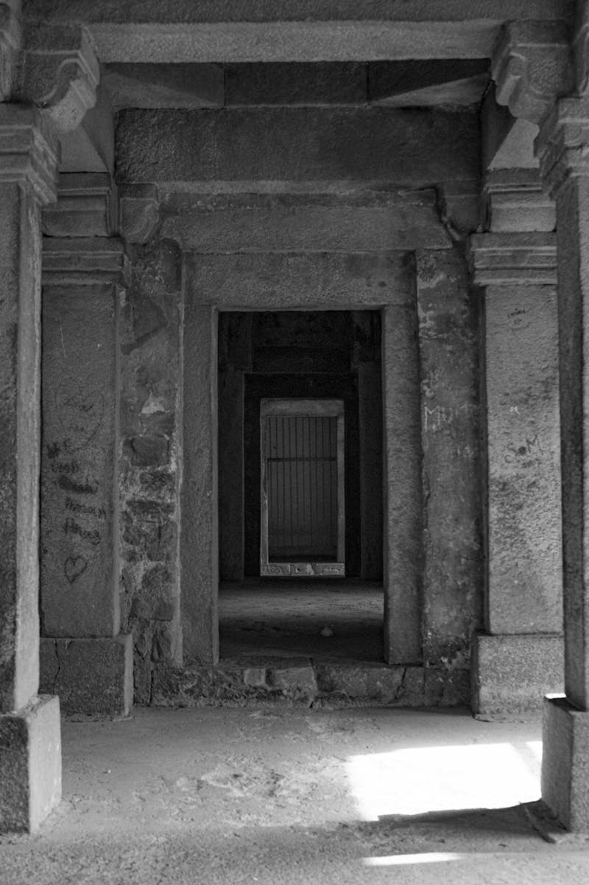

MEMENTO MORI
The Entrance
Chased by the howls of the wild that followed you through the shining daylight, you find yourself approaching a stony doorway barely exposed by the light of day. Standing there, staring quietly at the barred path before you, and seeing the crumbling stone designs that litter both the pillars and ground around, you take it all in for a moment. Before you take any actions you hear the eerily rusty bar door.
"Creeeaaak..."
It echoes in the gentle breeze. you've only one option when seeing the gate move, but what lies inside is uknown in comparison to he beasts behind you.
Enter
Run Away
